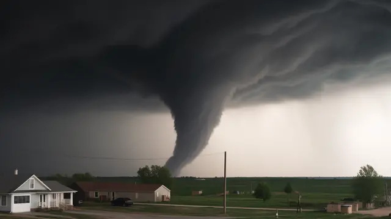

Наведите курсор на красные маркеры, чтобы изучить внутреннюю структуру шторма.

Зона максимального разрушения. Вращающийся столб воздуха, достигающий земли. Скорость ветра +-400 км/ч.
Двигатель шторма. Мощный поток теплого влажного воздуха, который засасывается вверх, питая грозовую ячейку энергией.
Область нисходящего потока. Капли воды замерзают на огромной высоте и падают вниз в виде ледяных глыб, иногда размером с бейсбольный мяч.